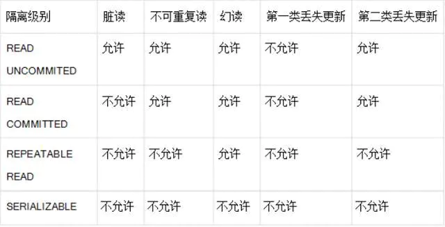

数据库
基础
Statement 和 PreparedStatement 有什么区别？哪个性能更好？
1.PreparedStatement 代表预编译的语句，优势是可以减少SQL的编译错误并增加SQL的安全性
2.PreparedStatement 语句可以带参数，避免字符串连接拼接SQL语句的麻烦和不安全
3.当批量处理SQL的时候PreparedStatement有明显的性能上的优势，数据库可以将编译优化后的SQL语句缓存起来，下次执行相同结构的语句时会很快。
使用 JDBC 操作数据库时，如何提升读取数据的性能？如何提升更新数据的性能？
要提升读取数据的性能，可以指定通过结果集（ResultSet）对象的 setFetchSize()方法指定每次抓取的记录数（典型的空间换时间策略）
要提升更新数据的性能可以使用 PreparedStatement 语句构建批处理，将若干 SQL 语句置于一个批处理中执行
在进行数据库编程时，连接池有什么作用？
由于创建连接和释放连接都有很大的开销（尤其是数据库服务器不在本地时，每次建立连接都需要进行 TCP 的三次握手，释放连接需要进行 TCP 四次握手，造成的开销是不可忽视的），为了提升系统访问数据库的性能，可以事先创建若干连接置于连接池中，需要时直接从连接池获取，使用结束时归还连接池而不必关闭连接，从而避免频繁创建和释放连接所造成的开销，这是典型的用空间换取时间的策略（浪费了空间存储连接，但节省了创建和释放连接的时间）。池化技术在Java 开发中是很常见的，在使用线程时创建线程池的道理与此相同。基于 Java 的开源数据库连接池主要有：C3P0、Proxool、DBCP、BoneCP、Druid 等
JDBC 能否处理 Blob 和 Clob？
Blob 是指二进制大对象（Binary Large Object），而 Clob 是指大字符对象（Character Large Objec），因此其中 Blob 是为存储大的二进制数据而设计的，而 Clob 是为存储大的文本数据而设计的。JDBC 的 PreparedStatement 和ResultSet 都提供了相应的方法来支持 Blob 和 Clob 操作。
什么是 DAO 模式？
DAO（Data Access Object）顾名思义是一个为数据库或其他持久化机制提供了抽象接口的对象，在不暴露底层持久化方案实现细节的前提下提供了各种数据访问操作。在实际的开发中，应该将所有对数据源的访问操作进行抽象化后封装在一个公共 API 中。用程序设计语言来说，就是建立一个接口，接口中定义了此应用程序中将会用到的所有事务方法。在这个应用程序中，当需要和数据源进行交互的时候则使用这个接口，并且编写一个单独的类来实现这个接口，在逻辑上该类对应一个特定的数据存储。DAO 模式实际上包含了两个模式，一是 DataAccessor（数据访问器），二是 Data Object（数据对象），前者要解决如何访问数据的问题，而后者要解决的是如何用对象封装数据。
事务的 ACID 是指什么？
A(Atomic) 原子性 事务中各项操作，要么全做要么全不做，任何一项操作的失败都会导致整个事务的失败。
C(Consistent) 一致性 事务的结束后系统状态是一致的；
I(lsolated) 隔离性 并发执行的事务彼此无法看到对方的中间状态
D(Durable) 持久性 事务完成后所做的改动都会被持久化，即使发成灾难性的失败，通过日志和同步备份可以在故障发成后重建数据
当多个事务访问同一数据时，可能存在5类问题，包括三类数据读取问题(脏读，不可重复读和幻读)和2类数据更新问题(第一类丢失更新和第二类丢失更新)
脏读: A事务读取到B事务未提交的数据，并在此基础上做了操作，而B事务回滚事务，那么A读取到的数据就是脏数据
不可重复读: 事务A重新读取前面读取过的数据，发现数据已经被另一个已经提交的事务修改过了。（修改）
幻读： 事务A重新执行一个查询，返回一系列符合查询条件的行，发现其中插入了被事务B提交的行。（添加）
第 1 类丢失更新：事务A撤销时，把已经提交的事务B的更新数据覆盖了。
第 2 类丢失更新：事务 A 覆盖事务 B 已经提交的数据，造成事务 B 所做的操作丢失。
数据库通常会通过锁机制来解决数据并发访问问题，按锁定对象不同可以分为表级锁和行级锁；按并发事务锁定关系可以分为共享锁和独占锁

列出 5 个应该遵循的 JDBC 最佳实践
###